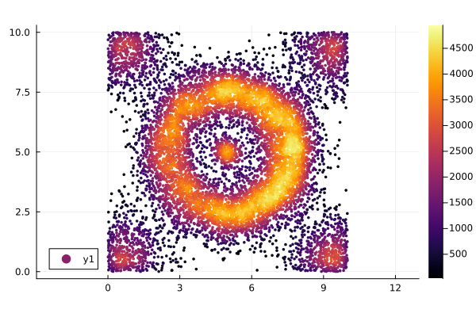
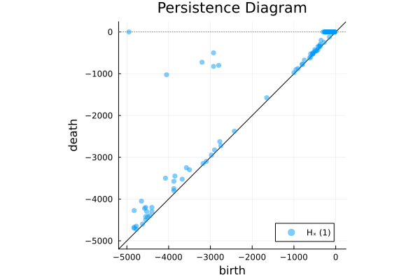
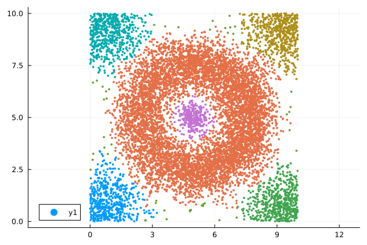

Topological Mode Analysis C++ Tool
- The conference version of the paper (high-level presentation, easy to read): link
- The journal version of the paper (with the full technical details): link
- The paper presenting the soft clustering variant of the algorithm: link
- The C++ code + sample data sets: link
The original author and main contact to get more details about this method is Steve Oudot
Install C++ program
wget https://www.cs.umd.edu/~mount/ANN/Files/1.1.2/ann_1.1.2.tar.gz
tar zxvf ann_1.1.2.tar.gz
cd ann_1.1.2 && make linux-g++ && cd -
wget http://geometrica.saclay.inria.fr/data/Steve.Oudot/clustering/ToMATo_code.tgz
tar zxvf ToMATo_code.tgz
cd ToMATo/ && make ANNLIB=../ann_1.1.2 && cd -using DelimitedFiles, Plots, PersistenceDiagrams
toy = readdlm("./ToMATo/inputs/toy_example_w_density.txt")
scatter(toy[:,1], toy[:,2], marker_z = toy[:,3], aspect_ratio=1, ms=2, markerstrokewidth=0, size(500,500))
run the program with delta=0.25 and tau=1e20.
run(`./ToMATo/main ./ToMATo/inputs/toy_example_w_density.txt 0.25 1e20`)Process(`./ToMATo/main ./ToMATo/inputs/toy_example_w_density.txt 0.25 1e20`, ProcessExited(0))0.25is the value of radius delta (a.k.a. Rips radius) to be used in the construction of the neighborhood (Rips) graph.1e20is the values of the threshold tau on the prominence of the clusters to be used for merging clusters. It also serves as a threshold on the heights of the peaks, so any cluster of height less than tau is treated as background noise.
You can then visualize the persistence diagram encoded in diagram.txt
pairs = readdlm("diagram.txt")
pairs .*= -1
intervals = [PersistenceInterval(p...) for p in eachrow(pairs)]
pd = PersistenceDiagram(intervals)
plot(pd)
It then shows the thresholding line superimposed to the persistence diagram. This may help users find relevant values for tau. Once this step is done, you can rerun the clustering program with the chosen value of tau :
run(`./ToMATo/main ./ToMATo/inputs/toy_example_w_density.txt 0.25 1e3`);Process(`./ToMATo/main ./ToMATo/inputs/toy_example_w_density.txt 0.25 1e3`, ProcessExited(0))and visualize the corresponding clustering in clusters.txt. In this example, the choice of tau reduces the number of clusters to 6.
clusters = vec(readdlm("clusters.txt"))
clusters[isnan.(clusters)] .= 0
scatter(toy[:,1], toy[:,2], color = Int.(clusters), aspect_ratio=1, ms=2, markerstrokewidth=0)